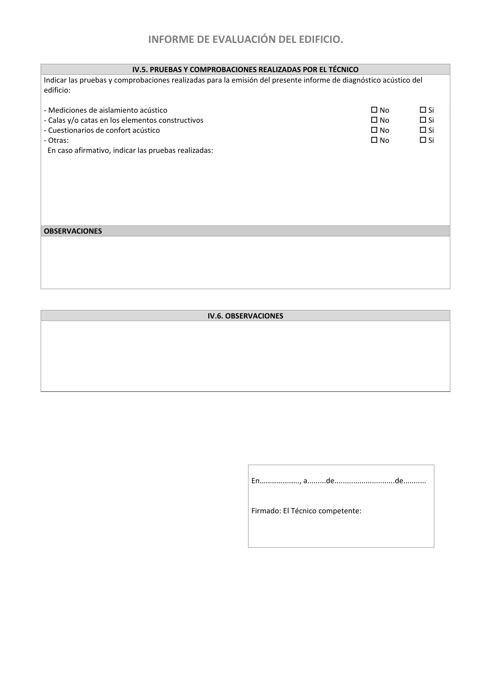

<!doctype html>
<html lang="es"><head><meta charset="utf-8">
<meta name="viewport" content="width=device-width, initial-scale=1">
<title>GUIA · p. 52 — Página 52</title><link rel="stylesheet" href="../estilo.css">
</head><body>
<nav><a href="../index.html">Índice</a> › <a href="../doc/guia-pdf-a5d4ef5252ba-2016-11-01-813669d3066c.html">GUIA</a> › p. 52</nav>

<header class="meta">
<p><strong>GUIA</strong> · Página 52 · versión 2016-11-01</p>
<p>SHA256: <code>813669d3066c0ff79457d57b80b0512a4fbb248bc5db1f7baf473c369a064738</code> · página física 52 de 65 · métodos de encabezado
solo si están cotejados.</p>
<p><a href="../doc/guia-pdf-a5d4ef5252ba-2016-11-01-813669d3066c.html">Documento</a> · <a href="guia-pdf-a5d4ef5252ba-2016-11-01-813669d3066c__p0051.html">← p. 51</a> · <a href="guia-pdf-a5d4ef5252ba-2016-11-01-813669d3066c__p0053.html">p. 53 →</a></p>
<p>Formatos: <a href="../../contenido/docs/GUIA-PDF-a5d4ef5252ba/2016-11-01__813669d3066c/pagina/p0052.md">Markdown</a> · <a href="../../contenido/docs/GUIA-PDF-a5d4ef5252ba/2016-11-01__813669d3066c/bloque/p0052.json">JSON de bloques</a> · <a href="../../contenido/docs/GUIA-PDF-a5d4ef5252ba/2016-11-01__813669d3066c/fuente.pdf#page=52">PDF p. 52</a> · <a href="../../contenido/docs/GUIA-PDF-a5d4ef5252ba/2016-11-01__813669d3066c/figura/p0052.png">imagen PNG</a></p>
</header>
<nav class="paginas"><a href="../doc/guia-pdf-a5d4ef5252ba-2016-11-01-813669d3066c.html">Documento</a> <a href="guia-pdf-a5d4ef5252ba-2016-11-01-813669d3066c__p0051.html">← p. 51</a> <a href="guia-pdf-a5d4ef5252ba-2016-11-01-813669d3066c__p0053.html">p. 53 →</a></nav>
<h2>Encabezado de la página</h2><ul><li>Sin encabezado de fuente cotejada en esta página.</li></ul>

<pre class="literal">INFORME DE EVALUACIÓN DEL EDIFICIO. 
 
IV.5. PRUEBAS Y COMPROBACIONES REALIZADAS POR EL TÉCNICO 
Indicar las pruebas y comprobaciones realizadas para la emisión del presente informe de diagnóstico acústico del 
edificio: 
 
- Mediciones de aislamiento acústico 
 No 
 Si 
- Calas y/o catas en los elementos constructivos 
 No 
 Si 
- Cuestionarios de confort acústico 
 No 
 Si 
- Otras: 
 No 
 Si 
  En caso afirmativo, indicar las pruebas realizadas: 
 
 
 
 
 
 
 
 
 
OBSERVACIONES 
 
 
 
 
 
 
IV.6. OBSERVACIONES 
 
 
 
 
 
 
 
 
 
 
 
 
En…………………, a.........de.............................de........... 
 
 
Firmado: El Técnico competente:  
 
 
 
 
</pre>
<figure><a href="../../contenido/docs/GUIA-PDF-a5d4ef5252ba/2016-11-01__813669d3066c/figura/p0052.png"></a><figcaption>Imagen de la página 52 (PNG ya extraído; prevalece sobre fórmulas).</figcaption></figure>
<h2>Tablas candidatas de esta página</h2><ul><li><a href="../../contenido/docs/GUIA-PDF-a5d4ef5252ba/2016-11-01__813669d3066c/tabla/p0052_t01.json">p0052_t01.json</a> · <a href="../../contenido/docs/GUIA-PDF-a5d4ef5252ba/2016-11-01__813669d3066c/tabla/p0052_t01.csv">.csv</a> (8 × 6; candidata, no reconstruida aquí)</li><li><a href="../../contenido/docs/GUIA-PDF-a5d4ef5252ba/2016-11-01__813669d3066c/tabla/p0052_t02.json">p0052_t02.json</a> · <a href="../../contenido/docs/GUIA-PDF-a5d4ef5252ba/2016-11-01__813669d3066c/tabla/p0052_t02.csv">.csv</a> (2 × 3; candidata, no reconstruida aquí)</li></ul>
<h2>Referencias, notas y excepciones (página y vecinas)</h2><ul><li><a href="../apartado/guia-pdf-a5d4ef5252ba-2016-11-01-813669d3066c__a0037.html">ID a0037 · A2.1 Valoración de las prestaciones básicas de protección frente al ruido</a></li></ul>
<h2>Apartados que incluyen esta página</h2><ul><li><a href="../apartado/guia-pdf-a5d4ef5252ba-2016-11-01-813669d3066c__a0034.html">ID a0034 · INFORME DE EVALUACIÓN DEL EDIFICIO.</a></li></ul>

<footer>Generado estáticamente desde JSON normalizado; sin JavaScript ni servicios externos.
El JSON es la fuente; este HTML es caché reproducible.</footer>
</body></html>
